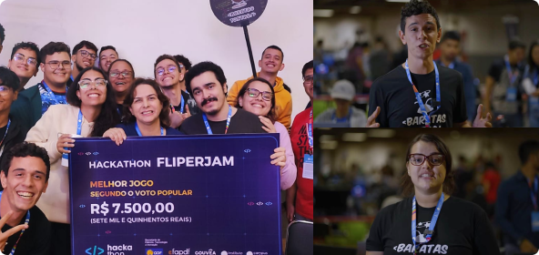

06 de Abril, 2022
CPBSB5

Na 5° edição da Campus Party em Brasília, nós, da comunidade, tivemos uma presença marcante! Ficamos muito felizes em compartilhar que nossos integrantes ganharam na modalidade de melhor jogo, segundo a votação popular do Hackathon FLIPERJAM. Além disso, alguns de nossos integrantes foram convidados a fazer depoimentos para a equipe de produção da Campus Party. Foi uma experiência incrível para todos nós!